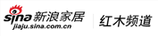

010-67648198
010-67648198
杂志 Magazine
《中国红木古典家具》杂志创刊于2004年，是全球第一本中国传统家具的行业杂志，是中国消费者保护基金会打假工作委员会红木家具消费维权办公室的指导刊物。并定位于现状于趋势、新闻与事件、文化与学术、企管与经营、产业与品牌五大板块。
该杂志的读者定位主要是：全国红木家具生产、加工企业；全国红木家具大采购商；全国红木家具经销商；红木收藏家；红木及木作行业专家；红木发烧友（执着爱好者）
该杂志为双月刊，每双月1日出刊，全国公开发行。发行量6万册，价格60元/册，规格250mm×340mm。
《中国红木古典家具》杂志创刊于2004年，是全球第一本中国传统家具的行业杂志，是中国消费者保护基金会打假工作委员会红木家具消费维权办公室的指导刊物。并定位于现状于趋势、新闻与事件、文化与学术、企管与经营、产业与品牌五大板块。
该杂志的读者定位主要是：全国红木家具生产、加工企业；全国红木家具大采购商；全国红木家具经销商；红木收藏家；红木及木作行业专家；红木发烧友（执着爱好者）
该杂志为双月刊，每双月1日出刊，全国公开发行。发行量6万册，价格60元/册，规格250mm×340mm。
《中国红木古典家具》杂志创刊于2004年，是全球第一本中国传统家具的行业杂志，是中国消费者保护基金会打假工作委员会红木家具消费维权办公室的指导刊物。并定位于现状于趋势、新闻与事件、文化与学术、企管与经营、产业与品牌五大板块。
该杂志的读者定位主要是：全国红木家具生产、加工企业；全国红木家具大采购商；全国红木家具经销商；红木收藏家；红木及木作行业专家；红木发烧友（执着爱好者）
该杂志为双月刊，每双月1日出刊，全国公开发行。发行量6万册，价格60元/册，规格250mm×340mm。
《中国红木古典家具》杂志创刊于2004年，是全球第一本中国传统家具的行业杂志，是中国消费者保护基金会打假工作委员会红木家具消费维权办公室的指导刊物。并定位于现状于趋势、新闻与事件、文化与学术、企管与经营、产业与品牌五大板块。
该杂志的读者定位主要是：全国红木家具生产、加工企业；全国红木家具大采购商；全国红木家具经销商；红木收藏家；红木及木作行业专家；红木发烧友（执着爱好者）
该杂志为双月刊，每双月1日出刊，全国公开发行。发行量6万册，价格60元/册，规格250mm×340mm。
网站 Web site
-
中国红木古典家具网
（www.zghmgdjjw.com 或 www.hm-3223.net），创办于2003年，由中国红木古典家具理事会主管，是红木家具行业第一个专业门户网站。 -
中国红木古典家具网
（www.zghmgdjjw.com 或 www.hm-3223.net），创办于2003年，由中国红木古典家具理事会主管，是红木家具行业第一个专业门户网站。 -
中国红木古典家具网
（www.zghmgdjjw.com 或 www.hm-3223.net），创办于2003年，由中国红木古典家具理事会主管，是红木家具行业第一个专业门户网站。 -
中国红木古典家具网
（www.zghmgdjjw.com 或 www.hm-3223.net），创办于2003年，由中国红木古典家具理事会主管，是红木家具行业第一个专业门户网站。 - 
中国红木古典家具网
（www.zghmgdjjw.com 或 www.hm-3223.net），创办于2003年，由中国红木古典家具理事会主管，是红木家具行业第一个专业门户网站。
影视 Magazine
-

红木内参
《红木内参》（微信号：hmnc2014）是由中国红木古典家具理事会主办，致力打造红木行业专业、深度、快速的新媒体形式。它是理事会成员的交流平台，主要发而中国红木产业的各类信息动态，向理事会会员推送最新、最专业、最全面的行业内部参考消息。每周五期，通过智能手机微信公众帐号平台进行点对点信息发布。《红木内参》将最快速反映行业事件及相关信息，有极强的参考价值。
微信号：hmnc2014

北京木成金营销顾问有限公司
公司概况：我公司是国内首家以中式文化为核心、专注于红木产业和木文化产业的传媒集团，是传统媒体与新媒体相结合的新兴媒体机构。
公司规模：公司有10年以上的历史，总部下辖管理、产品、销售、综合、保障、培训、交易7大系统，20余个中心级部门，员工近300人，拥有最具实力的红木行业专家团队。公司有独立的办公大楼，在全国各地设有10余个派出机构。
公司业务：包括杂志出版、网络运营、影视制作、新媒体传播及营销顾问服务等。
杂志包括《中国红木古典家具》、《红木》、《中式生活》、《中华木作》，均为双月刊，公开发行。
网络运营包括中国红木古典家具网、红木网、红木之家网、中式生活网、中华木作网、等10余个线上网站。
杂志包括《中国红木古典家具》、《红木》、《中式生活》、《中华木作》，均为双月刊，公开发行。 网络运营包括中国红木古典家具网、红木网、红木之家网、中式生活网、中华木作网、等10余个线上网站。
指导机构
分支机构

上海机构驻地：
上海市普陀区中山北路1958号华源世界广场1801室浙江东阳驻地：
浙江省东阳市吴宁街道城南东路1号南山宾馆六楼福建仙游驻地：
福建省莆田市仙游县鲤南镇a2区b栋3层（无限极楼上）
- 公司总部：
- 地址：北京市丰台区南方庄2号院3号楼和合大厦3层
- 邮编：100079
- 电话：010-67648198
- 前台：010-57510181
- 传真：010-67648198
中桥联合国际传媒广告（北京）有限公司 版权所有 京公网安备11010602004750号-3